天津教古文書の批判に先だち、私は如何なる因縁で天津教の存在を知つたか、又如何なる必要あつて其古文書を批判するか、この二點に就いて説明して置きたい。
昭和三年五月の末に、天津教信者の某々二氏が拙寓に訪れ、その寶物の寫眞を贈られ、兼てその本據地なる茨城縣磯原へ參詣を勸められた。私は寫眞を一見して、其原物の欺瞞性を感知し甚だ怪しからんことを聞くものかなと思つたが爭ふことを止めて穩に歸した。しかし主なる一人は有力なる金主であると察せられたので、同氏の將來を思ひ、直に書面を以て寫眞に對する愚見を述べ、天津教の警戒すべき所以を知らせた。其後何等の挨拶もないので、この警告が何程利いたか分らない。
昭和五年十二月天津教關係者が警視廳の取調を受けた時、須く彼等が皇室の歴史に對して施したところの錯迷狂的加工を追究し、嚴重の處分を爲すべきものであつたと思ふが、左樣な徹底的の處置が講ぜられなかつたものと見え、其後も天津教は檢擧に懲りずして宣傳を續け、シリヤの石ころ、ピラミッド類似の山などを應援に擔出して益
 病的迷妄の傳播を試みるのであつた。實に苦々しきことと思つたが、世間天津教以上に不都合な宣傳をするものも澤山あるから、一々相手にして居られない。しかるに昨年八月私は日本醫事新報から天津教古文書の歴史的價値を調べることを頼まれた。天津教古文書は莫大あるものと稱せられるが、不信者には容易に見ることは許されまいと思ひ、先づ取敢えず手元にある寫眞七枚の中の古文書に關するもの五枚の檢討に取掛つた。而してこの五枚の寫眞のみの研究により、啻にこの五枚に限らず、天津教古文書の全部は悉く最近の僞造にかゝり全く取るに足らないものであるとの判斷に到達した。そこで依頼者に此趣を返答したが、其意味は決定的であつたに係らず文句は抽象的であつた。抽象的にした譯は、凡そ追撃撲滅等の場面は人心を刺激する恐れがあり、此所でも類似の恐れを避けようとしたためである。處が間もなく私が關係してゐる或る場所で、軍人の勸誘により、思想善導の講演を遣つて貰ふと、天津教を利用した話を聞かされたものである。かうなると最早天津教を對岸の火事扱にすることは出來ない。且又最初に二人の信者を私に向けた方も海軍大將であつたことを想起し、旁天津教の性質上これは或は軍人間に比較的多くの信者を有するに非ざるかとの疑を生じ、少しく探索して見ると果して其通りである。しかれば即ちかの狂的妄想が那邊を蠧毒するに至るや推察するに難からずで、事甚だ憂ふべきものがある。今にして其浸漸を防止せざれば、早晩健全なる思想との衝突を惹起し、其結果社會に迷惑を及ぼすことあらうと思はれる。是れ或は杞憂に過ぎないとするも、豫め天津教の眞價を知り、事に當つて迷はざるを期すべきであらう。茲に於て私は再び天津教古文書の批判を思立ち、曩に屑しとせざりし方式により精査糺明これ勉め以て一般世人をも警醒せんことを試みるのである。
病的迷妄の傳播を試みるのであつた。實に苦々しきことと思つたが、世間天津教以上に不都合な宣傳をするものも澤山あるから、一々相手にして居られない。しかるに昨年八月私は日本醫事新報から天津教古文書の歴史的價値を調べることを頼まれた。天津教古文書は莫大あるものと稱せられるが、不信者には容易に見ることは許されまいと思ひ、先づ取敢えず手元にある寫眞七枚の中の古文書に關するもの五枚の檢討に取掛つた。而してこの五枚の寫眞のみの研究により、啻にこの五枚に限らず、天津教古文書の全部は悉く最近の僞造にかゝり全く取るに足らないものであるとの判斷に到達した。そこで依頼者に此趣を返答したが、其意味は決定的であつたに係らず文句は抽象的であつた。抽象的にした譯は、凡そ追撃撲滅等の場面は人心を刺激する恐れがあり、此所でも類似の恐れを避けようとしたためである。處が間もなく私が關係してゐる或る場所で、軍人の勸誘により、思想善導の講演を遣つて貰ふと、天津教を利用した話を聞かされたものである。かうなると最早天津教を對岸の火事扱にすることは出來ない。且又最初に二人の信者を私に向けた方も海軍大將であつたことを想起し、旁天津教の性質上これは或は軍人間に比較的多くの信者を有するに非ざるかとの疑を生じ、少しく探索して見ると果して其通りである。しかれば即ちかの狂的妄想が那邊を蠧毒するに至るや推察するに難からずで、事甚だ憂ふべきものがある。今にして其浸漸を防止せざれば、早晩健全なる思想との衝突を惹起し、其結果社會に迷惑を及ぼすことあらうと思はれる。是れ或は杞憂に過ぎないとするも、豫め天津教の眞價を知り、事に當つて迷はざるを期すべきであらう。茲に於て私は再び天津教古文書の批判を思立ち、曩に屑しとせざりし方式により精査糺明これ勉め以て一般世人をも警醒せんことを試みるのである。就いては天津教の何物なるかを知らない人もあると想ふから、其性質を一瞥して見る。
天津教は現に磯原に住する竹内氏が守るところの皇祖皇太神宮を中心として宣傳せられる思想の系統である。その主張を聞けば、武内宿禰の子孫は後ち竹内と稱し連綿千九百年、皇祖皇太神宮を奉戴して以つて今日に及び、其間あらゆる困難と迫害とを經て、尚ほよく神代より傳はつた皇室關係の古文書及び古器物を守護保存してゐると云ふのである。此主張以外に今の所は病氣治癒の保證を附けたり、男女交際の便宜を計つたり、心靈現象の所作を見せたり、乃至財物勸進の強要を行つたりする樣なことを聞かない。此點普通の宗教とは違つてゐる。内部の組織も簡單で、未だ伏魔殿式施設を見ない。外部への宣傳方法も穩かで惡辣でない。故に風教上から視て此教派ほど無難なものは珍しい。此の如く所謂宗教的施設に關しては何等注意すべきものなきも、其代りに古器物古文書を證據として神代百億萬年の歴史を展開し以て皇室の規模を莊嚴するに勉める。此所苟も批判を許さない態度を取つてゐる。如何にも其遣方が地味とも見られ、凡そ紅粉と縁遠きため、君子も近くべからしめ以て知識階級に呼懸ける神社神道を想はしめるものがある。
以上は勿論表面觀察に寫るところであるが一歩深入して研究して見ると、勿論挾む所あつての仕事で、其目的を隱すために皇威を藉り人を幻惑させようとする仕組が浮出して來る。類似の企圖はよくある手で、鎌倉時代にも徳川時代にも明治時代にも現れたことがあり、專門家には珍しくはない。天津教其物は此種類の最も新しいものであり乍ら、矢張全然齒牙にかけるに足らない素物であることは一見明白である。しかし確な證據を捉へて止めを刺すには第一に研究を要し第二に力を要する。故に官署から命令あらば骨折つて鑑定するのも面白いが、大概の場合には此種の勞して效なき事項は駄目であるの一言で早速逃げるのが賢いのである。しかしさうした具合に賢かつた大學の博士達は天津教側から首音の濁つた陰口言はれてゐるから、私は又どんな怨を受けるか測知り難い。
偖て彌
批判に取掛るが、其材料は前申した如く古文書の寫眞五枚である。僅に五枚、實に天津教文書の片鱗に過ぎない。故に片鱗を以て全體を見ることは出來ないとの反駁あらば認めることを躊躇しない。しかしながら同時に又生命を取るには一箇の致命傷にて足ることを心得なければならぬ。抑もこの五つの文書は單なる片鱗ではない。片鱗と雖も代表的寶物として寫眞に撮られ誇示されたものである。之を又軍陣に喩ふれば天津教の精鋭を統率する將軍と見るべきで、英姿颯々威風堂々たるを想はしめる底のものである。もし吾人の張る研究の爲めに此等將軍が一々致命傷を蒙ることあらば、其結果知るべきで、率ゐる所の全軍は土崩瓦解してあはれ潰滅の路を辿る外ないであらう。檢討に附するに當り文書の順序は新しきより古きに遡る。
第一の文書は寫眞の標記に長慶太神宮御由來とあり、文字が細かい上に汚染のため不明な所もあるが、之を擴大して見れば一字を除き間違なく讀める。即ち左の通りである。
掛卷毛恐伎應永二乙亥年十月十四日越中國神明棟梁
皇祖皇太神宮境内に長慶太神宮奉勸請祭神皇王九十八代
長慶寛成天皇神靈歴代皇靈神御帝河内交野私市師師
窟寺に敵の爲に元中九年閏十月十五日夜御壽四十九歳御崩百重
原に葬神靈神體天皇詔して御名を石に形假名にて堀付る御頭毛
□瓶に十六菊紋附十六菊紋袈裟御宸筆歌鈴を神體に祭る
攝社秋葉位明神總大將殉死紀氏竹内越中守正四位惟
眞壽七十三歳の神靈竹内信治五十七歳神靈竹内日座定介改め
惟尚神靈天皇の忠心勸王者竹内一族百五十名天皇前後の
敵に隱れ敬護し勸王家元中九年八月十三日窟寺に安着の時
九十七名居る道中の難戰に討死の者岩崎彌助前田又藏關屋
次郎若槻禮太郎關谷和吉牧野助之丞粕谷十郎倉富
利秋板垣七之助東郷八右ヱ門黒田清兵衞澁澤隆榮高橋
門次澁谷安右ヱ門眞鍋武利楠次郎正幸清浦善次郎平田
東右ヱ門野村惣三郎中田清次郎安田作右ヱ門岡崎藤助井上
次郎淺野長義松井藏之助櫻井左ヱ門赤井幾右ヱ門一條助
隆二條利義中條春完三條信義四條隆次五條清信六條
助信八條信弘芝信義小村安五郎武藤清右ヱ門新保八郎小山
三郎杉政次郎右ヱ門高道治助高柳利治藤田小三郎野尻善右ヱ門
稻垣角之進草野清利蛭田甚左ヱ門木村常陸之助結城三左ヱ門
斯波左ヱ門白川政利長井吉兵衞の神靈を同日奉勸請毎年
十月十四日を祭日に定
應永二年十月十四日五日印之
祭主棟梁皇祖皇太神宮神主
紀氏竹内宗義謹（華押）
紀氏竹内惟義謹（華押）
長慶太神宮祕藏
此縁起文の大要を述ぶれば、應永二年十月に越中國高祖皇太神宮境内に長慶太神宮を設け、主神として長慶天皇を祭り、攝社として秋葉位神社を建て、之には長慶天皇御崩御の際の殉死者竹内惟眞外二名及び同志の戰死者岩崎彌助以下五十三名を合祀すると云ふのである。皇祖皇太神宮境内に長慶太神宮奉勸請祭神皇王九十八代
長慶寛成天皇神靈歴代皇靈神御帝河内交野私市師師
窟寺に敵の爲に元中九年閏十月十五日夜御壽四十九歳御崩百重
原に葬神靈神體天皇詔して御名を石に形假名にて堀付る御頭毛
□瓶に十六菊紋附十六菊紋袈裟御宸筆歌鈴を神體に祭る
攝社秋葉位明神總大將殉死紀氏竹内越中守正四位惟
眞壽七十三歳の神靈竹内信治五十七歳神靈竹内日座定介改め
惟尚神靈天皇の忠心勸王者竹内一族百五十名天皇前後の
敵に隱れ敬護し勸王家元中九年八月十三日窟寺に安着の時
九十七名居る道中の難戰に討死の者岩崎彌助前田又藏關屋
次郎若槻禮太郎關谷和吉牧野助之丞粕谷十郎倉富
利秋板垣七之助東郷八右ヱ門黒田清兵衞澁澤隆榮高橋
門次澁谷安右ヱ門眞鍋武利楠次郎正幸清浦善次郎平田
東右ヱ門野村惣三郎中田清次郎安田作右ヱ門岡崎藤助井上
次郎淺野長義松井藏之助櫻井左ヱ門赤井幾右ヱ門一條助
隆二條利義中條春完三條信義四條隆次五條清信六條
助信八條信弘芝信義小村安五郎武藤清右ヱ門新保八郎小山
三郎杉政次郎右ヱ門高道治助高柳利治藤田小三郎野尻善右ヱ門
稻垣角之進草野清利蛭田甚左ヱ門木村常陸之助結城三左ヱ門
斯波左ヱ門白川政利長井吉兵衞の神靈を同日奉勸請毎年
十月十四日を祭日に定
應永二年十月十四日五日印之
祭主棟梁皇祖皇太神宮神主
紀氏竹内宗義謹（華押）
紀氏竹内惟義謹（華押）
長慶太神宮祕藏
第一、文體に就いて吟味するに、初めの文句は掛卷毛恐伎で、如何にも神社の縁起にふさはしいと聞えたが二の句が續かず、忽ち凡俗の口調に變じ、奇妙な熟語や當字を使つてゐる。熟語の例は第二行に皇王（人皇と云ふべき所）、第四行に御崩（崩御）があり、當字の例は第五行に形假名（片假名）堀付（彫付）、第九行に忠心（忠臣）、第十行に敬護（警護）、第二十三行に印（記）がある。而して形假名と印とは後に取扱ふ平群眞鳥の文書にも既に現れてゐるから、天津教傳來の語法と取つて差支ない譯で、千年も變らずにかうした文字を使つてゐるのは甚だ頑強な所がある。其所には何か特別な理由が存在するものと見られるが、是は後に研究することにする。用語の穩かならぬものに第五行の初に「百重原に葬」がある、此所は葬の唯の一字で滿足すべきでなく宜しく敬語の形とすべきである。最も大體成つてゐない文章であるから、敬語の用法などを責むるは無理かも知れぬ。第十行の「敵に隱れ敬護し勸王家云々」は多々論議すべき所を持つてゐるが、今は唯警護せしと云ふべきを其中から「せ」の一字を脱した所に注意を呼んで置くに止める。それから勸王家は勿論勤王家の誤であらうが、どうも新しい響がする。又徳川以前には所有格を示す「の」字は大抵「之」字を使つたのであるが、此文には悉く「の」字を用ゐてゐるのも亦新しく見える。第二十三行の「印之」は之を記すと讀まなければ意味が通じない。即ち印は記の當字である。此用例は平群眞鳥にも出てゐる。第二十五、二十六行署名の下に書とか記とか或は之に代る動詞があるべき所に、普通此等の字に副詞として添へられる謹の一字を置き其下に華押を書添へてゐる。此形式は又平群眞鳥の場合に現はれるから所謂頑強の第二例となる。最後に此文の最も不都合なる點は第七行の「紀氏竹内越中守正四位云々」と書下した所に存ずるのであるが、史實に關するものであるから後
 にして、今は唯此文は典故を知らない人の作つたものであることを言つて置く。
にして、今は唯此文は典故を知らない人の作つたものであることを言つて置く。以上文體の考察を約言すれば、此文は文法も知らず典故も知らずして書いたもので、且つ全體の調子より察して比較的近頃の人の作と思はせられる。
第二、書體に就いて吟味するに、字形は大體唐樣と取るべきもので、御家流の影響は微弱である。而して一見菱湖の影響を肯定出來る。筆致を考へるに器用の質であるが未だ修練を積まない。故に無理が出來たり誤字が現れたりする。前者の例として第二行其他にある「宮」第四行「夜」第六行「歌」等の行體を擧げ得る。後者の例としては第四行「窟」第六行「裟」第九、十行「勤」第十一行「難」第十四行「次」とすべき所に無理な形或は全く別字を用ゐてゐる。此外に許すべき範圍に入る特異の字形が頗る多い。其中二三を擧げると皇、靈、義、隱、信等の文字が得られる。他は必要もないから省くことにする。此等の文字は個性習慣によつて頑強性を保持し、他の文書にも現れることを餘儀なくされてゐるのを見るであらう。所謂頑強の第三例である。
以上書體の考察を約言すれば、此書は素人の筆で、菱湖の風を受けてゐる所より推測して、天保以前に遡らしめることの出來ないものである。
第三、内容に就いて吟味するに、時日、地理、人物、事件の順序で調査する。
時日に關し、干支閏月等の記入には不都合はない。
地理に關し、越中國皇祖皇太神宮の所在が問題とすべきであるが、之を決定するには意外の困難が豫想せられるので、暫く天津教の言分を立てる。併し後で判るが結局はこの穿鑿の必要は無いのである。次に河内國交野郡私市師々窟寺は師々を獅子として生きる。昔は龜山帝の御陵があると想はれた有名な寺である。百重原も其附近にあつて鴨長明の歌で顯れてゐる。
人物に關しては、長慶天皇を除き奉り、外の登場者は五十六人共皆目分らない。併しながら竹内家郎黨の名前の一二字を變へると、近頃の相當聞えた人が顯れ出るのである。私の氣付いた二三を選んでみようならば、顯れ出る人は岩崎彌之助、岩槻禮次郎、黒田清隆、澁澤榮一、平田東助、淺野長勳、松崎藏之助或は松井庫之助、藤田小四郎等で、此中藤田小四郎だけが明治前の人である。選び手が變ると又人數が増すことになるであらう。今一事郎黨の名前に就いて目立つことを云へば、一條二條と順を追ひ、七條を除き中條を以て之に變へて第三番目に置き、八條迄の苗字に各
立派な名乘を附けて並列させた奇觀である。郎黨の名前を讀んで行けば何か知らん近頃の人が並んでゐる樣な氣がしてならず、應永頃の勢揃ひとしては受取り難い所がある。即ち人物の實在性に關しては多大の疑團が存ずるのであるが、其一人を證明するにも否定するにも、丁度皇祖皇太神宮所在地の場合と同じ樣な困難を感ずるのであるから、無駄な努力を止めて、次ぎの事項に移る。事件即ち史實に關しては確實な證據を擧げ得られることだけを述べる。此縁起には、長慶天皇は「敵の爲に元中九年閏十月十五日夜御壽四十九歳御崩百重原に葬」と記載されてゐる。長慶天皇の御事蹟に就いては中間種々の説もあつたが、今日は略
一定し、崩御に關しては大乘院日記目録に記載する所を正しいとされてゐる。之に由れば天皇は南北合一の後京都に還幸せられ大覺寺に御座し、應永元年八月一日聖壽五十二にて崩御せられてゐる。右大乘院日記目録は當時第一流の學者であつた一條兼良の子大僧正尋尊の記録したもので、天津教文書など出たところで對抗覺束ない。即ち此文書の長慶天皇に關する記事は虚妄である。しかし聞く所に由ると天津教では何事でも自分側の主張を正しいとすると云ふことで、甚だ始末に惡いのであるが、此所でも必ず負惜に出るであらう。然らば進んで殉死者の一條に移る。先きに文體を論ずるに當り「紀氏竹内越中守正四位惟眞」と書下したのは典故を知らないためだと指摘して置いたが、官位を記す書式を知らないことは許してやつても、どうしても許せないのは正四位である。凡そ位階は大寶令で定められた以來明治初年末まで變化なしに傳つて來たもので、其定めによれば、位階には各正從があり、殊に四位以下には正從に亦各上下があつて、單に正四位と云ふ位は無いのである。即ち正四位竹内某など云ふ人の應永年間に存在したことは認める譯に行かない。從つて此記事は又虚妄である。何うしてこんな不都合なことを書いたか其原因を突止めて見よう。これには第一に考へられるのは、知つてこの樣な不都合を書く筈もないから、知らないで書いたものと爲さなければなるまい。そこで又二つの場合が考へられる。第一の場合は實は知つてゐるが一寸忘れるか不注意の爲めかで書落したものと取るのである。第二の場合は全く知らない爲め書かなかつたと取るのである。先づ事實は第一の場合であつたと取る。さうすると宗義惟義等は大事な尊族の官位を書き間違へたと云つただけで濟みさうであるが、さうは行かない。何ぜなら如何に長慶太神宮祕藏の文書とはいへ、書手が再見出來ない筈もなし、又最初書終つた時にも校讀もしたであらう。而して此所の不都合に氣付いたとすると全然清書し直すか又は訂正しなければならない筈である。しかるに何等施すところがないのを以て見れば、忘れたのでも見落したのでもなく全く知らなかつたのである。獨り宗義惟義が知らなかつたのみならず、竹内家代々の人も亦知らなかつたのである。さう演繹せざるを得ないではないか。併し要するに書手の二人が知らなかつただけでよろしい。即ち第一の場合が成立せずして第二の場合が成立することになる。即ち宗義惟義二人ともに正四位に上下のあることを知らないことになるのであるが、赤の子供や土百姓素町人ならいざ知らず、殿上人の資格ある惟義の近親たる二人が知らないとは何事ぞ。しかし事實知らないものなら致方もないが、其代り知らないで濟む時代に生息して貰はなければなるまい。さうすると惟義宗義は明治後の人と取るが相應しい。何ぜなら位階に上下の無くなつたのは明治に入つてからであり、之が確に制定されたのは明治二十年であるからである。以上内容の考察を約言すれば、此文書の史實が認められないのみならず、應永二年に竹内某々の書いたといふことも全く僞りと極まり、且つかゝる出鱈目を書く資格は明治も末年の無學のものに限られてゐると云ふ斷案が伴ふことになる。
上述の理由に由り長慶皇太神宮由來は明治後期以後の僞作にかゝるものと判斷する。
第二の文書は寫眞の標記に長慶天皇御眞筆とあり、二通より成立する。其全文は下記の如くである。
第一文書 第二文書
鳴ゆたなり諸國巡り 鳴呼覺り天に神辟
父をふて合して歸る 獅子口に隱魂都百重
河内の口ち寺 帝乃千代守り
元中九壬申八月二十六日 元中壬申十閏月九日
ゆたなり（華押） 覺理（華押）
惟眞へ 惟眞へ
宗義へ 宗義へ
信治へ 信治へ
右長慶天皇御眞筆とあるものと此次に出づる後醍醐天皇御眞筆とあるものとは、孰れも破損甚しく且つ汚染も多く、何のためかくなるまでに麁末な扱方を爲したものであるか解釋に苦むところである。破損汚染も果して自然のものか、それとも人工を加へたものにあらざるか、甚だ疑ふべきところがある。併しながら此程度の寫眞ではこの疑問につき十分の研究を爲し難いから、其調べは止めにして直に文書の意味を取調べる。而して豫め斷つて置くが、此文書も又次の文書も一目瞭然天皇のものでないことが分るのであるから、其積りで批判する。鳴ゆたなり諸國巡り 鳴呼覺り天に神辟
父をふて合して歸る 獅子口に隱魂都百重
河内の口ち寺 帝乃千代守り
元中九壬申八月二十六日 元中壬申十閏月九日
ゆたなり（華押） 覺理（華押）
惟眞へ 惟眞へ
宗義へ 宗義へ
信治へ 信治へ
第一、文體に就いて吟味するに、二通とも僅か三十字足らずの文の中に誤字、當字、衍字、脱字等夥しく構へ、誤字を除いた外は態と分り難くする目的を以て、恐らく尊嚴を増すために、異樣の書振りを試みた如くに想はれる。そこで之を平易の文に書換へると第一文書は「嗚呼寛成は諸國を巡り、父を追ふて合して河内の獅子窟寺に歸る。」第二文書は「嗚呼覺理は天に神避け、獅子窟寺に隱れ都す、百重原は帝の千代守る所。」とこんな意味ではなからうかと想ふ。原文を有りのまゝに讀めば巫女の口寄せか御筆先かの口調に類し、一種の悲哀を感ぜさせる。かゝる變梃な文であるから、其意味などに重きを置くのも考物であるが、一つ見逃すことの出來ないのは第一文書の三行目にある口ち寺の「ち」である。私は之を「つ」の轉訛と取つたのであるが、類似の轉訛は平群眞鳥の文書と稱するものにも現れるから注意すべきである。
以上文體の考察を約言すれば、此文は假名違ひがあり、假名の多過ぎたるも時代の下れることを示し、口寄せ風の口調も如何はしいことであり、之を長慶天皇の宸翰など稱するは實に以ての外のことである。
第二、書體に就いて吟味するに、筆法は長慶太神宮御由來を書いた人のものと全く一致し、從つて筆者の同一人なること疑ふべくもない。前に特異の字形として摘出して置いた字が此所にも出てゐるから證據となる。二つの文書とも第一行第一字は鳴であるが、これは嗚の誤りである。呼の崩方もあやしい。最早誤字など云々する必要も薄らいで來たが、それでも參考になるから例の特異の字形即ち頑強性を有するもの三つを摘出する。それは「歸」「都」「守」である。これがやがて後醍醐天皇御眞筆にも重ねて現出するのである。
以上書體の考察を約言すれば、此等二つの文書の筆者は長慶太神宮御由來の筆者と同一であると云ふ事實に歸着する。
第三、内容に就いて吟味するに、第一文書に「父ををふて合して歸る」とあるが、前に之を父を追ふと讀み、御父君後村上天皇の御跡を追はれ御一所に河内に入らせられたと取つたのである。處が長慶天皇が河内に入られたのは長慶太神宮御由來によつて見ても此文書の日附元中九年八月二十六日より遠く遡ることはないと推せられる。即ち後村上天皇崩御の正中二十三年よりずつと後のことである。さうすると前の讀方では史實と合はないことになる。そこで假名の「を」を正しいと立てて終ふと讀めば其所までは宜しいが、「合して歸る」へ續かなくなり、神祕的な説明でもしなければ分らなくなる。而して神祕的の解釋なら勝手に出來ることであるが、そんなことをする必要もない。何故なら此文書の記事は幾分長慶太神宮御由來を補足する所もあるが、歸着する所は由來記と同一で、何等事實と認められるものでないのであるから、結局此文書は僞物と極り、此上研究する價値のないものだからである。次に第二の文書は第一行の末字がよく讀めないのであるが、多分「辟」かと想ひ、而して又此字はかゝる文書に不相應と推し、「避」の間違ではなからうかと取り、
 を補つて讀んだのである。處で天に神避くるはあながち概念すること出來ないでもないが聊か神祕的になる恐れがある。そこで寧ろ辟のまゝにして置いたらどうかと見るに、辟は天子となり明かとなり徴すともまだ幾らも意味がある。此等の意味で附會けるには更に努力を要する如く思はれる。而して如何なる努力も此文書の殿を承つてゐる由來記同樣の史實を肯定することは不可能である。結局此文書は第一文書と同じく僞物と極まるのである。
を補つて讀んだのである。處で天に神避くるはあながち概念すること出來ないでもないが聊か神祕的になる恐れがある。そこで寧ろ辟のまゝにして置いたらどうかと見るに、辟は天子となり明かとなり徴すともまだ幾らも意味がある。此等の意味で附會けるには更に努力を要する如く思はれる。而して如何なる努力も此文書の殿を承つてゐる由來記同樣の史實を肯定することは不可能である。結局此文書は第一文書と同じく僞物と極まるのである。以上内容の考察を約言すれば、二通の文書の記すところ大體長慶太神宮御由來の記事に含まれ居るか或は演繹すべき範圍のもので、全く虚構に過ぎないのである。
上述の理由に由り長慶天皇御眞筆は明治末期に作成したる僞物と鑑定する。
第三の文書は標記して後醍醐天皇御眞筆と題し二通ある。全文左の通りである。
第一文書 第二文書
流が禮くる常陸のくに居 我禮隱魂ゆく登む靈實ば
足し王洗良日の國歸り 帝枝たむく帝の國倍榮
隱魂都こぞ 萬づ代守るぞ
與國二幸已九月六日 興國二幸已九月十二日
尊治（華押） 尊治（華押）
惟光へ 惟光へ
惟眞へ 惟眞へ
右後醍醐天皇御眞筆と稱する文書二通は長慶天皇御眞筆と稱する文書二通と全く同一筆にして、僞筆なること明白なるも一應の取調を行ふべし。
第一、文體に就いて吟味するに、二通とも長慶天皇御眞筆と稱するものの文體に同じである。文意は判明し難い所もあるが、第一文書は後醍醐天皇が常陸國大洗へ御著になり其所で崩御あらせられたと云ふ樣に取られ、第二文書は御隱れの後と雖も御靈は帝を助け國を守るべしとの仰せごとの如くに聞える。かく考へたのは間違つてゐるかも知れず又幸に當つてゐるかも知れないが、何のためかゝる拮屈
 牙なる文句を書綴り、畏れ多くも天皇の御名を附し奉つたか怪むべきである。坊さんの讀經と同じく分らんのが尊嚴を増す所以とでも考へての所爲か。それにしても御名を附するにはもつと旨い文章を代作せしむべきであつた。如何に祕密を守る必要があつても是で押通せると思ふは少しく變だ。小頸を傾けざるを得ない。
牙なる文句を書綴り、畏れ多くも天皇の御名を附し奉つたか怪むべきである。坊さんの讀經と同じく分らんのが尊嚴を増す所以とでも考へての所爲か。それにしても御名を附するにはもつと旨い文章を代作せしむべきであつた。如何に祕密を守る必要があつても是で押通せると思ふは少しく變だ。小頸を傾けざるを得ない。以上文體の考察を約言すれば、此文は長慶天皇御眞筆の文と同じく全く甚しい僞作である。
第二、書體に就いて吟味するに、筆法は長慶天皇御眞筆と稱するものと全然同一にして、從つて又長慶太神宮御由來とも全く一致する。即ち筆者の同一なることを想はしめる。前に指摘して置いた奇癖の文字は此等文書にも現れ居ることを注意すべきである。特に長慶天皇御眞筆に現るゝ「歸」「都」「守」等を比較すれば同筆なること一目瞭然である。字形の無理なるもの、誤謬とすべきものを擧げると第一文書の第一行「陸」、第二行「足」、第四行「與」（興の誤）、同行「幸」（季の誤）、第二文書の第三行「守」、第四行「幸」（季の誤）等がある。此等の文書は長慶天皇御眞筆と共に文字頗る大形にして菱湖の影響を判然と看ることが出來る。則ち之を文化文政以前のものとするは許すべからざることなるに、何の根據あつて天津教はかゝる幼稚の筆を以て、名筆隱れなき後醍醐天皇の御物し給ふなどと言振らすものぞ。
以上書體の考察を約言すれば、此等二つの文書の筆者は長慶太神宮御由來の筆者と同一であるとの事實に歸着する。
第三、内容に就いて吟味するに、文書に云ふところ其意味明かならず殆ど了解に困難を感ずる。かゝる變態的記述を吟味するには勢ひ作者の心事を忖度する必要も加はり容易のことでは判斷に達し得ない。故に明確に捕捉の出來る點に就いてのみ吟味する。そこで第一文書の日附は興國二年九月六日第二文書の日附は同年同月十二日となつてゐるが、史を按ずるに後醍醐天皇は延元四年八月十六日崩御あらせられてゐるから、これらの日附は崩御の日から數へて七百五十九日と七百六十五日目に當つてゐる。孰れも今日の勘定では二年一ヶ月程度の隔りがある。即ち天津教では後醍醐天皇崩御の後二年一ヶ月を經て尚ほ御存命あらせられてゐると取つてゐることになるのであるが、此事實は之を歴史的無知に歸すべきか。それとも異を稱ふるためわざと大それた試みを爲したと取るべきか。抑も又靈魂不滅の實證を提供せんとの意であるか。孰れにしても甚だ面妖の次第である。此所でも負惜みを云ふならば天津教知識の錯迷狂的變態性は證明されたと見るべきであらう。
以上内容の考察を約言すれば、此文書は後醍醐天皇御眞筆とあるに係らず、崩御後二年一ヶ月を經た日附で書かれてゐるから、全く怪しからぬ僞物である。
上述の理由に由り後醍醐天皇御眞筆は明治末期後の僞作と鑑定する。
第四の文書は標記に大日本天皇國太古代上々代御皇譜神代文字之卷、大臣紀氏竹内平群眞鳥宿禰書寫眞筆とあり、二枚より成立する。其文下の如くである。
第一枚
天地棟梁祖根 日根 人根 祖日根
天神人祖一神宮日根 國
五色人ノ棟梁ノ天皇 天津日
嗣天日根天皇ノ系圖寶骨
像神體寶ノ大祕藏卷
第二枚
天皇即位二年十月三日詔シテ日ヨリ即位五年
十一月三日迄謹印シ
大臣紀竹内平群眞鳥宿禰謹
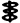
大臣 大伴室屋連謹
連 物部目連謹
即位五フクラムノ年十一月三日迄印
今上大泊瀬幼武天皇 奉上
棟梁皇祖皇太神宮ノ神代文字卷ヲ
形假名唐文字以テ寫シ寶卷
皇祖皇太神宮大祕藏ノ卷
萬國ノ棟梁天皇寶ノ卷
此文書は今迄取扱つたものと違ひ、單獨の文書にあらずして、一卷の記録の部分を成すものである。第一枚は表題或は扉に當り第二枚は多分同一記録の跋語と追記に當るものと察せられる。天地棟梁祖
天神人祖一神宮
五色人ノ棟梁ノ
嗣天日根天皇ノ系圖寶骨
像神體寶ノ大祕藏卷
第二枚
天皇即位二年十月三日詔シテ日ヨリ即位五年
十一月三日迄謹印シ
大臣紀竹内平群眞鳥宿禰謹
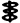
大臣 大伴室屋連謹
連 物部目連謹
即位五フクラムノ年十一月三日迄印
今上大泊瀬幼武天皇 奉上
棟梁皇祖皇太神宮ノ神代文字卷ヲ
形假名唐文字以テ寫シ寶卷
皇祖皇太神宮大祕藏ノ卷
萬國ノ棟梁天皇寶ノ卷
第一、文體に就いて吟味するに、第一枚第一行、第三行、第二枚第八行、第十一行の四ケ所に棟梁の語が出てゐる。是は總括する人の意味に使用してゐるのは明かで、別に不思議もないやうであるが、長慶太神宮御由來にも二度繰返されて居り、所謂頑強性を帶びてゐるから注意を要するのである。次に第一枚第一行及び第二行に出てゐる「根」の字には一々「ムト」と振假名を附けてゐるが、第四行の「根」の字には此振假名はない。併し此所でも無論ムトと讀むのであらう。このムトはモトと同義に相違ないが、何故モをムと改めたかその理由は明かでない。そこでムをモに復歸せしめて見れば「祖根」は祖の本、「日根」は日の本、「人根」は人の本となつて讀めるには讀めるが、一寸踏込んで意味を考へると判然しがたい所もある、併し此程度の言葉は何とか解釋も着きさうに考へられる。ところで「祖日根」は何であらう。是は構はず祖の日の本と讀んで、どんな解釋でも附會出來る樣にして置かう。第二行の「天神人祖一神宮」は祖日根以上に人の頭を混亂せしむる文字の組合せで、結局是も何んとでも附會出來る樣にして置けば差支ない譯であるから、寧ろ讀まないことにして置く。讀まないながらにも如何なる意味で言つてゐるか位のことは推測しても宜しからうと思ふから、一寸その意味を忖度して見よう。そこで直下に控へる「日根國」であるが、これは日の本國と讀み即ち我國をさしてゐることは、其下に續出づる言葉との關係上寸分疑のないことである。凡そ國民として自分の國を善くしたいのは至情であるから、往々自慢に取られる樣なことを言つても恕すべきであると思ふが、此文の作者も亦我國民であるから忠君愛國の至情の溢るゝ所、遂にかゝる難解の文字を列ね其間に廣大無邊神聖靈妙の意味を含蓄せしめ、以て我國を讚稱しようと試みたのであると取るは非か。或は難解と目せるに對し異存はあつても、精神を汲取得たと爲すには異存はあるまい。何となれば公平なる第三者の立場から見てこれほど都合の善い解釋はあるまいと考へられるからである。そこで今迄言つたことは分らんでも、一番都合の善い樣に、手取早く、日本を嚴しく形容するために集積した語であらうと取つて置く。第三行の「五色人」は曾て字引にも見たことのない樣な氣がする名目であるが、後に内容の吟味に際し重要の役目を演ずる言葉であるから、此所で十分檢覈して置かねばならぬ。五色人と僅か三字の組合せであるが、實物を示されるなら兎に角、單に文字だけで如何なるものであるかを極めようとすると、恰も力學の三體問題に肖つたが如くに、見當を附けるに絶大の困難を感ずる。幸にも此所には犯すべからざる制限があつて問題を稍
扱ひ易くして呉れることを見出すのである。其制限とは即ち如何なる解釋を得るにしても、苟くも我國に不利益なる樣なものを採用することは出來ないと云ふことである。此制限は第一行第二行に於ける難解の文字を處理した方針の延長と見るべきもので、何人と雖も異存あるべき譯のものでない。さて五色人を五の色の人、五の色人、五色の人と三段の見方をなして違算なきを務める。第一に五の色の人と見るとき、色と人との間の「の」は所有格を現はすと取れば無意味となる故、之を五の色の下に附け人を形容するための接續辭と取れば結局五色の人と同意味となるのである。第二に五の色人と見るとき、色人とは如何なるものと問ふまでもなく、僅か五だけの色人の棟梁ではに特有の人種が住居し、各の人種の皮膚の色が差つてゐることを説いてあつたと記憶する。この五種の人間を五色人と取つたとするが一番自然であるのみならず、外の意味に取ることは不自然であるとか、不敬になるとか、差障があるとかで面白くないから、即ちこゝに定説を得たことにして置かう。同行に天皇に「スミラミコト」と振假名を附けてゐるが、普通スメラミコトと云ふところを、わざとメをミに改めた理由は判らない。併し前にモをムと爲したと同じ原因に由るものとすれば例の頑強性の何者か働いてゐることが察せられる。第四行より第五行に亙る寶骨像神體寶とは寶骨を以て造つた像を神體と崇め奉つたところの寶物との意味であらう。以上部分的に意味を探究しても尚ほ判然し難いところもあるが、大體に於てこの執拗に見える文字の行列も案外單純なることを云つてゐる樣である。即ち全文を解りよくすれば、天地の棟梁即ち祖根、日根、祖日根は云ふもさらなり、天神人あるとあらゆるものの祖の唯一の神宮と云ふべき日本國に御座して、世界の五種の人類の棟梁にています天皇、即ち天津日嗣天日根天皇の系圖、及び寶骨像御神體の寶物たることを記した大切なる祕密の卷となる。約言すれば世界の主たる日本の皇室の御系圖と寶骨像由來記を合した祕書となる。此の如く解釋すれば前に言つた如く是は表題若くは扉書の類なることが判るであらう。第二枚の初めの二行に文法の違式が二ヶ所ある。先づ第一行の「詔シテ」は詔ノ、詔シタル、詔セシ等とすべく、もし敬語を使はば詔シ給ヘシと云ふべきである。次に第二行の「謹印シ」であるが、印は長慶太神宮御由來第二十三行を吟味した際此所に參照して置いた如く記の當字である。其下の「シ」はスとすべきを犯則に出て居るもので、類似の犯則は第九行にも繰返されてゐる。此等文法上の違式は頑強性を帶びたるものと取るべきである。
次に署名の方式は前に長慶太神宮御由來を吟味した際に此所に參照して置いた如く彼此全く同一の樣式に出で皆謹の一字を以て止めてゐる。而して直下に華押を書く代りに左旁に神代文字を以て之を記してゐる。
署名の前に當り「即位五年十一月三日謹印シ」と記しながら、第六行に至り又同樣のことを繰返してゐる。これは此等の文書に共通な執拗性の一例と見るべきであるが、唯五年とのみ云はずして「五年フクラムノ年」と記したるは何の意か。フクラムを脹らむとすればノは不必要なるを、しかせざりしは文法に暗きものとせざるを得ない。しかし脹らむ年の意味は依然として不明なれば假に榮えるの意なるべしと取つて置く。
第七行は今上大泊瀬幼武天皇に上げ奉ると讀むのであらう。第九行「形假名唐文字以テ寫シ寶卷」は形假名唐文字を以て寫す寶卷の意であらう。此の「寫シ」を寫セシ或は寫シシ等の假名の一字を省きしものと取ることは文章の調子より推して過ぎた穿鑿と思はれ、矢張「ス」とすべきを「シ」と誤れるものと取るが自然の見方であらう。即ち此文の作者は既に第二行に於ても印スとすべきを印シとなし、又此所でも寫スとすべきを寫シとなし、同じ誤を繰返す如き常習を持つものと取つて差支なからう。之を東北人若くは雲州人或はシスを書別けること能はざる程の無教育者と取るは非か。右第二枚に現れた文意を説明して見れば、雄略天皇即位の二年十月三日平群眞鳥は詔を受け重要記録の書寫に從事し、五年十一月三日に至り其業を訖つた。出來上つたものは棟梁皇祖皇太神宮の神代文字卷を形假名及び唐文字を以て寫す寶卷、皇祖皇太神宮大祕藏の卷、萬國の棟梁天皇寶の卷の三種で、之を今上天皇に上げ奉ると云ふのである。
以上文體の考察を約言すれば、教養ある人の手に成るものと取ることの出來ない俗惡の文章であり、殊に發音上シスの區別を爲すことの出來ない疑も加はり、此點地方的色彩濃厚となり、中央政府の重要なる地位にある平群眞鳥の筆になるなどとは、凡そ信ずべからざることである。
第二、書體に就いて吟味するに、二枚とも同一の筆法を有し一人の筆に成ること明かである。併し此人は今迄扱つて來た御眞筆及び長慶皇太神宮御由來を書いた僞筆家とは別人と認められる。其證は彼人は生れつき器用と想はれ、又菱湖の影響を受け、文字は幾分媚態を帶び、可型性を有するのであるが、此人は寧ろ不器用と想はれ、是と云ふ書家の影響も現はれず、文字に雅致少く至つて頑強性に富んだ書振りである。今書家の影響は認められないと云つたが、此人の書風は能く神道家に見受けることがある。それは某神道元祖の影響に因るものであるが、尚ほ研究の餘地があり旁
斷定を差控へる。箇々の字形に就いて見るに、第一枚第二行に國の字の異形を用ひて居り、第二枚第一行に詔の字を誤つて書いてゐる。此他各所に散在する祖、神、寶、卷等皆許すべき範圍の字形であるのみならず、一方字形の正確なるものと拾上げると梁、嗣、即、謹等が數へられ、大體に於て字形は正確で書振りは謹嚴であると取つて差支ない。此點又某派の文字に似通ふところがある。
以上書體の考察を約言すれば、文字は極めて克明に書いてゐるが古雅の風致に乏しく、至つて近頃のものの如く想はれる。
第三、内容に就いて吟味するに、第一枚記するところの奇怪の文中「五色人ノ棟梁」なる言葉は見逃し出來ない。もしこれが吾人の推斷通り五大洲に關係あるものならば、此五大洲は一體何時頃から言慣はされる樣になつたかを考ふべきである。日本は勿論西洋でも古代に於て五大洲の稱があつた譯でない。尚更五種の人種があるなどは思ひも寄らないところである。皮膚の色を以て人類を五種に大別したのはブルーメンバッハの説より始まることで、まだ百五十年も經つたか經たないかの事である。故に五色人を云々するからには此文章はブルーメンバッハ以後のものと取らなければならない。勿論此所でも負惜みが出るであらうが、恐らくこれは小學讀本あつて以後のものであらう。
次に寶骨像神體寶であるが、寶骨と云へば尋常の人の骨とは取り難い。これは生前高貴の地位にあつた人の骨を指して云つた言葉であらう。前からの續きを考へると或は至尊の御骨を云ふものの如く想はれる。果して然らば是又見逃し出來ないものである。一體死骨を處理する方法として地葬火葬水葬風葬等が考へられ來つたものであるが、孰れの方法も無殘な有樣を見ない樣にするのが目的で、人情眞に然るべきことである。併し特別の目的があれば木乃伊にもし、アルコール漬にも鹽漬にも小間切れにもする。勿論人形にすることも出來る。かの被服廠跡で關東大震災の猛火で死んだ人々の骨を碎き固めて佛像を作つて拜ませてゐるなど其著しき例である。處で木乃伊やアルコール漬は是認すべき理由も立つが、人形を作る動機に至つては論議すべきところ多々ある。碎いたり捏ねたりして
すとは普通人の忍びないとする所であるのに、之を敢行するに至る原因は抑も如何なる心理より生ずるかが問題となるのである。吾人は直に思想の變態性及び頽廢性を聯想せざるを得ない。而して尊貴若くは權威に對する場合には阿諛性を帶びることを自然とすべきである。此等の點を調べようとすれば勢ひ人の心術を刳ることになる嫌もあり、且つ確な證據を捉へることも困難と想はれるから穿鑿は止めにする。又これよりも大切な點は我國に於て果して人骨を以て人形を作る風習の存在せしや否やであるが、今日もあることなれば昔にあつても差支なしなど抗辯されては急に黒白も解り兼ねるゆゑ、これも論議を略することにする。次に第二枚記載の署名の形式、神代文字の花押等當時果してかゝる書方のありしにや、誰も知らないことは胡麻化せるにしても、議論を水掛論化出來ない境地に持來り、其境地に於て問題となるは「形假名」である。天津教で形假名なる文字を使ふ意味は後で判るが、此所では此文字によつて何を現さうとしてゐるかと云へば、それは單に片假名である。そこで此片假名は吉備眞備に始まるといふ傳説は誤であつたにしても、雄略天皇時代に今日と同形の片假名があらうとは恐らく信ずる人はあるまい。もし此時代にさうした假名があつたら萬葉集にあんな難しい假名など使用することがなからうと想はれる。併し此程度の駁撃は例の負惜みで掛つて來るであらうから、直ぐ目の前に見える致命症の癌を指摘する。形假名の下にある「唐文字」の唐は不治の癌である。此所の唐はカラと讀ませる積りであらうが、それなら漢と書かなければならないので、唐では時代錯誤となる。唐は雄略天皇以後百五十年餘經て興つた國であるから平群眞鳥が三百年生きても雄略天皇即位五年に當つて此字を使用する理由は一つも見附からない。是は後醍醐天皇崩御の二年一ヶ月後の御眞筆と同型の話で全く驚かされる。それとも此所の唐は唐虞の唐と取れば、時代の矛盾は無いことになるが今度は文字が承知しないことになる。唐虞時代の文字は誰も知らないが、周以前に楷書があるなどは聞いたことがない。それとも唐は韓の間違であつたと逃る道もあるが、唐をカラと讀むことを知つてゐるからには矢張唐以後のこととなり、結局逃げる路を失つて斃れて仕舞ふ。
以上内容の考察を約言すれば、内的矛盾を含むのみならず、明治後に至り漸く知れ渡つたことを記するなどのこともあり、之を雄略天皇時代の記録となすは妄も甚だしい。
上述の理由に由り大日本天皇國太古大上々代御皇譜神代文字之卷大臣紀氏竹内平群眞鳥宿禰書寫眞筆は明治時代の僞作にして、作者は他文書の作者と同一人と爲すを得べきも、筆寫者は他文書の筆寫者と別人なりと判斷する。
第五の文書は標記して大日本天皇國太古代上々代神代文字之卷と題し、第四の文書の標題と極似してゐるが御皇譜の三字を失つてゐる。而して是は第四の文書と同樣に、單獨の文書と取るべきものにあらずして、纏つた記録の一部分をなすものと推察される。前後二枚續になつてゐて悉く見慣れぬ文字を以て書記してある。これが所謂神代文字と云ふものかと思ふと、聊かおどされるが、併しさう聞かされても少しも驚くことはない。今迄平群眞鳥の飜譯を見て來た所で古い言葉も正しい事實も知らずして、出鱈目を書いてゐるのであるから、此方も其積りで、どし／＼片付ける方針に出る。ところで唯一つ困つたことは此文書は一見第四文書の原文と見ることが出來ない、即ち第四文書は此文書を判讀するに最初の手懸となることが出來ない。依つて致方がないから此文書自體の上に手懸を探すことにするより他に道はない。偖て此文書の本文は左の通りである。
［＃図１〜図３は、右から続く一葉］
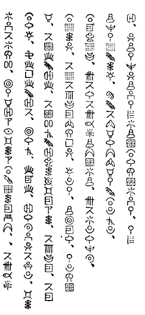
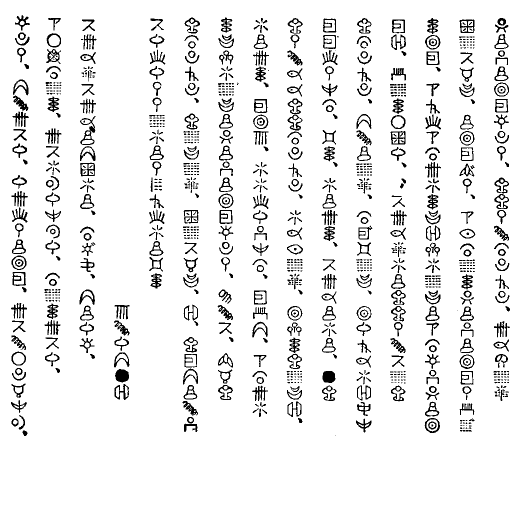
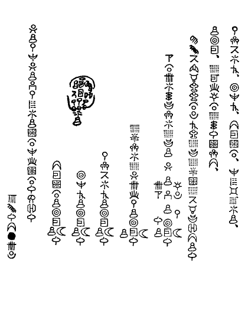
右文書の中から形の異つた文字を拾出して見れば其數四十四となる。而して或る文字の右肩に「¨」符を附したものを見受けるが、是は濁音符と解する。さうすると此等四十餘の文字はイロハ或は五十音に外ならないとの推測を爲す事が出來る。此假定の下に此等四十四の異樣の文字と五十音とを同知する試みを凡そ二十段に分つて布演して見よう。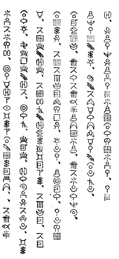
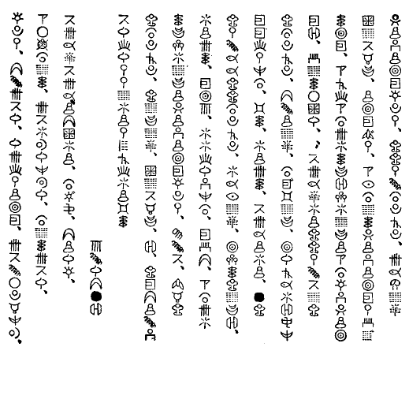
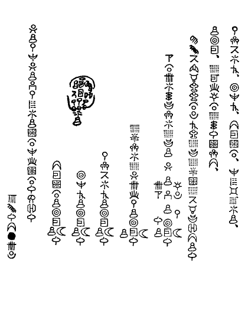
一。第十九行及び第三十二行の略
同位置に於て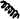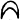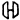と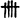とそれ／″＼記入されてゐるが、是は其所在の位置から推察して紙の順位を示してゐる數字と取られ、就中黒く消した所は書損のあつたものと取られる。而して此二枚は連續したものとして置いたが、左樣に考へることが最も相應しいと思ふから、此假定のもとに右に取出した異形文字の二つの組合は二箇の連續した數字として讀むことを試みる。而して既に示した方針に從ひ此等の文字を大膽に近代讀みにするのである。さうすると先づ以て左の讀方の外ないことになる。長方形内の讀方は相互の關係に由り否定されて消滅に歸することは下に説明する如くである。
（一） 三サン ロク シチ一 ハチ四
（二） シフ
（三） ニ シ 一 三コ 二ク
（四） 二イチ サン 三ロク シチ一 二ハチ
第一に數の文字の數が五と六であることが、これ等の數は十位の數であることを決定する。次に（二）のは其位地により十の讀みに當るべきを以てシフと判讀せられる。即ちはシ、はフと同知する。同時に 一形内の讀方は否定されて消滅する。次に（三）のと（四）のとは連續する數を現はすものであるから、この條件に抵觸する二 形内の讀方は消滅する。次には第三行及び第八行に言葉の首字となつてゐるから、ラ行の假名でない。即ち之をサと取る。同時にはン、はニと決定する。而して三 形内の讀方は消滅する。次には絶えて言葉の首字になつてゐないから、ラ行の字と取る。即ち 四形内の讀方が消滅してはロ、はクと同知される。以上合計七字が同知されたのである。
二。第二十六行より始まり第三十行に終る五人の署名と覺しき終の三字は皆となつてゐる。本文にも此組合が所々に出てゐるところを以て見れば、是は確に神代に屡使用される語で、人名の終に着く尊のことであらう。この推定によりはミ、はコ、はトと同知される。
三。象形文字と思はれるものが數多あるが、既にサと同知し得たは柵の象形なること明かで、は荷、は身、は戸の象形であらう。此例に傚へばは田即ちタ、は手即ちテ、は目即ちメ、は矢即ちヤ、は輪即ちワなること一見して明かである。其他にも澤山ある樣に見えるが速斷しない。
四。以上三段の結果を第二十九行及び第三十行の尊の名前に應用すれば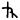はコヤミコト、はフトタミコトとなり、をネ、をマとすれば完全なる名前となる。由つてはネ、はマと同知する。
五。第四文書第二枚第三行平群眞鳥署名の左傍の神代文字花押はマトであるからはリと取つて間違なからう。即ちをリと同知する。
六。第二行に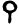とある中に即ち十、即ち萬年など入つてゐるところを見ると此組合は數字と思はれる、而して象形と取られるは葉、は乳即ちハチを成立せしめる。又も數字とすれば億を想はしめ、同時には尾の象形なることが知られる。元來億はオクであるべきだが、神代に在つて自由に漢音を使ふ位であるからオヲの混同などは問題とならぬであらう。依てはハ、はチ、はヲと同知せしめる。
七。第一行終より第二行にかゝりて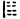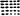とあるがヲミヤヲクリテで、は前後の關係からツと取るを自然とする。即ちをツと同知する。
八。第八行第九行及び第十六行にと組合せてゐるが、是はミミコトであるから、天津教のスミラミコトを想出させる。即ちをス、をラと同知するのである。幸に此想像によつた同知は他に應用して支障を生じないから確定して置く。
九。第三行第七行第十一行等に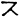があり第十三行にがある。而して第二十行に此二つの連續がある。此中に知られてゐる字は唯の二字であるが、直覺的に是はイザナギ、イザナミであらうと云ふことに想達する。而しては木、は魚の象形と取ればよいので、此判讀の當つてゐることは疑ひない。即ちはイ、はナ、はキと同知する。
十。第四行に、第五行にとあるはイツイロト、イロトとなり、五色人を想出させる。さう思付けばは如何にも火の象形と取られる。依てをヒと同知せしめる。
十一。第十行末より十一行に亙り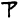とあるはマテラスミコトにて、をアとすれば天照らす尊となる。依てをアと決定する。
十二。第一行に二ヶ所、其他にも現るる組合はヲホとして大の意味に取れば意味通ずる。大は元來オホなれど天津教ではヲホで差支へないのである。故にをホと同知する。
十三。第二十四行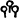はシタマフと爲すべき所なれどマは既にと同知せられてゐる故、天津教流に假名遣ひに頓着せずして、シタモフにて通ずるとなし、をモと同知して置く。
十四。第二十七行のは野の象形でノ字なること明かである。是は隨所に現れてゐるが此推測の妥當なることが直に證明される。即ちはノと同知する。
十五。第十五行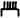は前後の關係より加賀の白山と云ふと解すべきである。即ちはカ、はイに當つべきも、イには既にが同知せられてあるから、はユであらうと思はれる。蓋し此字は湯の象形である。此推斷の妥當なることは第七行の、第九行の、第十一行のに於けるの用例に照して明かである。
十六。第五行及び第二十一行に現れるは明かに象形字であるが、これは龜の如き動物の背を形どりたるものと解しセとする。それにて意味が通ずる。
十七。第五行第六行第七行第十三行等に現れる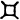は前後に鑑みてヨとすれば意味が通ずる。即ちをヨと同知する。
十八。第八行 、第十一行より第十二行に至る、第十四行、第二十五行（本文を脱す）等に於けるは數字を現はすものと推測せられる。ところで一（イチ［＃改行］ヒトツ）二（ニ［＃改行］フタツ）三（サン［＃改行］ミツ）四（シ［＃改行］ヨツ）五（コ［＃改行］イツヽ）六（ロク［＃改行］ムツ）七（シチ［＃改行］ナナツ）八（ハチ［＃改行］ヤツ）九（ク［＃改行］ココノツ）十（シフ［＃改行］トウ）百（ヒヤク［＃改行］モモ）千（セン［＃改行］チチ）萬（マン［＃改行］ヨロツ）億（オク）と並べ見ると唯六の名稱に含まれてゐるムの字だけが殘されてゐるのである。即ちをムと取る。併しムを六として應用して見ると六六億萬年、一六六萬年、七六六萬年、八六六萬年等となり少しも意味を爲さない。然るに天津教ではモをムと訛る例は第四文書の根をムトと讀ませることで判つてゐるが、此所のムもモの訛と取ればムムもモモ即ち百と解せられる。而して意味は完全に通ずる。即ちをムとすることは正しい。
、第十一行より第十二行に至る、第十四行、第二十五行（本文を脱す）等に於けるは數字を現はすものと推測せられる。ところで一（イチ［＃改行］ヒトツ）二（ニ［＃改行］フタツ）三（サン［＃改行］ミツ）四（シ［＃改行］ヨツ）五（コ［＃改行］イツヽ）六（ロク［＃改行］ムツ）七（シチ［＃改行］ナナツ）八（ハチ［＃改行］ヤツ）九（ク［＃改行］ココノツ）十（シフ［＃改行］トウ）百（ヒヤク［＃改行］モモ）千（セン［＃改行］チチ）萬（マン［＃改行］ヨロツ）億（オク）と並べ見ると唯六の名稱に含まれてゐるムの字だけが殘されてゐるのである。即ちをムと取る。併しムを六として應用して見ると六六億萬年、一六六萬年、七六六萬年、八六六萬年等となり少しも意味を爲さない。然るに天津教ではモをムと訛る例は第四文書の根をムトと讀ませることで判つてゐるが、此所のムもモの訛と取ればムムもモモ即ち百と解せられる。而して意味は完全に通ずる。即ちをムとすることは正しい。
十九。第二行第十六行第二十五行にの言葉があるが第二十五行に於ける下の言葉との關係から即位に當るものと推定出來る。即ちはソと同知する。
二十。以上四十四字の中三十九字を同知し得たから、殘るものは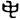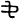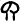の六字となつた。而してイロハの側から見て同知されないものはヘヌルレウヰオケエヱの十字である。此等の十字を代る／＼神代文字に當嵌め意味が通ずるや否やを見れば自ら同知が出來ることになるのである。同知の結果を云へばはウ、はエ、はオ、はヘ、はル、はレである。これで文書中の文字は悉皆解つたのであるが、同時に又ケヌヰヱの四文字が文書内に現れてゐないことも判つたのである。
ア行
カ行
サ行
タ行
ナ行
ハ行
マ行
ヤ行
ラ行
ワ行
ン
右二十段の檢索による結果を五十音の表にすれば上の如くである。一見象形文字と想はれるものを摘出すれば蚊、木、柵、背、田、乳、土、手、戸、魚、荷、根、野、葉、火、屁、穗、眉、身、褓、目、藻、矢、湯、輪、尾、等が得られる。他も亦皆象形文字らしく想はれるも俄に決定し難い。偖て全部を象形であるとすれば、これ即ち形文字で、この形文字を念頭に置き、之に對して片假名を第四文書に於て見たる如く形假名と稱するに非ざるかと推測される。これは決して妥當の名稱とは思へないが、天津教でかく考へたのでなからうかと思ふのである。もしこの推測が當つてゐるなら、天津教は木に竹を接いだと評すべきである。
第一、文體に就いて吟味するに、先づ以て部分的檢査より始める。
（イ）文字の右下方に位する小黒點は句讀點であるが、要らないと思ふところにあつたり、一個で十分であるのに二個打つたりしてある。第四行第七行第十一行第十三行第十五行第十六行第十七行等に其例がある。
（ロ）假名遣ひの誤は甚だ夥しい。オヲの混用は多くあるが意味を取違へる恐れもないから一々指摘しない。スをシとする頑強性は無論此所にも繼續する。第一行第十六字はの誤、第四行第十二字も亦の誤、第六行第十字及び第七行第三字はの誤（此は古言と取れば差支へない）、第二十四行第十三字はの誤、第二十八行第三字はの誤、第三十一行第十九字はの誤とすべきである。
（ハ）全然關係を認めること出來ない字を使つたものに第二十四行第六字がある。是はとすべきであるが、此文章ならでも我慢出來る。併しでは全く意味を爲さない。
（ニ）脱字を掲ぐれば、第二行のの下に月の名が落ちてゐるが、何月を入れてよいか判らない。第三行第十二字と第十三字との間にの三字を補入せざればイサナキミフタカミで意味を爲さない。第七行第七字より始まるは脱字がありさうに思はれる。の間にを入れると、是ヲバ一ニの意となり解かることになる。第十四行第十七字の上にを補ふべきであると思ふ。それとも天津教用例で之を省略するを慣例としてゐるのかも知れない。第十六行第二字と第三字との間及び第二十六行第六字と第七字との間には第十行に於ける用例に從へばを入れるのであるが、是は孰れを是とすべきか判らないが、注意を要するため此所に記して置く。第二十三行第十五字の下にが脱してゐる。第二十五行第十字の下にを拔かしてゐる。
（ホ）動詞の終止形を取るべき所に連用形を用ゐることは第四文書に於て見出されたのであるが、此第五文書の中にも現はれてゐる。本文中にもあるが、最も著しきは署名に伴つて現はれてゐる。このことは第四文書に於けると同じである。第二十五行以下第三十一行に至るが即ちそれである。
（ヘ）神代の言葉を以て記してある筈なるに、漢音の言葉が雜つてゐる。第二行（即位八十八億萬年）、第三行（サイシ）、及び（サイカンシヤウ）、第四行（天）、第六行（スイモン）、第八行、（天ヲ百億萬年）、第十一行より第十二行に亙り、（百億五百萬年）、第十四行（億）、及び（萬年）、第十六行（即位）、及び（八）、第十六行（萬年）、第十九行（六十二）、第二十一行（サイカンシヤウ）、及び（サイ）、第二十二行（天）、（フクサイ）、及び（サイクワンチヤウ此語は前にも出てゐるが綴方が異なつてゐる）、第二十五行（即位八百萬年）、及び（一）、第三十二行（六十三）等以て徴すべきものである。偖て脱字誤字等を補正すれば全文は下の如く讀まれる。―印を右傍に附したるは誤字、左傍に附したるは脱字である。
（二） シフ
（三） ニ シ 一 三コ 二ク
（四） 二イチ サン 三ロク シチ一 二ハチ
第一に數の文字の數が五と六であることが、これ等の數は十位の數であることを決定する。次に（二）のは其位地により十の讀みに當るべきを以てシフと判讀せられる。即ちはシ、はフと同知する。同時に 一形内の讀方は否定されて消滅する。次に（三）のと（四）のとは連續する數を現はすものであるから、この條件に抵觸する二 形内の讀方は消滅する。次には第三行及び第八行に言葉の首字となつてゐるから、ラ行の假名でない。即ち之をサと取る。同時にはン、はニと決定する。而して三 形内の讀方は消滅する。次には絶えて言葉の首字になつてゐないから、ラ行の字と取る。即ち 四形内の讀方が消滅してはロ、はクと同知される。以上合計七字が同知されたのである。
二。第二十六行より始まり第三十行に終る五人の署名と覺しき終の三字は皆となつてゐる。本文にも此組合が所々に出てゐるところを以て見れば、是は確に神代に屡
使用される語で、人名の終に着く尊のことであらう。この推定によりはミ、はコ、はトと同知される。三。象形文字と思はれるものが數多あるが、既にサと同知し得たは柵の象形なること明かで、は荷、は身、は戸の象形であらう。此例に傚へばは田即ちタ、は手即ちテ、は目即ちメ、は矢即ちヤ、は輪即ちワなること一見して明かである。其他にも澤山ある樣に見えるが速斷しない。
四。以上三段の結果を第二十九行及び第三十行の尊の名前に應用すれば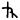はコヤミコト、はフトタミコトとなり、をネ、をマとすれば完全なる名前となる。由つてはネ、はマと同知する。
五。第四文書第二枚第三行平群眞鳥署名の左傍の神代文字花押はマトであるからはリと取つて間違なからう。即ちをリと同知する。
六。第二行に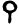とある中に即ち十、即ち萬年など入つてゐるところを見ると此組合は數字と思はれる、而して象形と取られるは葉、は乳即ちハチを成立せしめる。又も數字とすれば億を想はしめ、同時には尾の象形なることが知られる。元來億はオクであるべきだが、神代に在つて自由に漢音を使ふ位であるからオヲの混同などは問題とならぬであらう。依てはハ、はチ、はヲと同知せしめる。
七。第一行終より第二行にかゝりて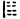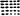とあるがヲミヤヲクリテで、は前後の關係からツと取るを自然とする。即ちをツと同知する。
八。第八行第九行及び第十六行にと組合せてゐるが、是はミミコトであるから、天津教のスミラミコトを想出させる。即ちをス、をラと同知するのである。幸に此想像によつた同知は他に應用して支障を生じないから確定して置く。
九。第三行第七行第十一行等に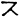があり第十三行にがある。而して第二十行に此二つの連續がある。此中に知られてゐる字は唯の二字であるが、直覺的に是はイザナギ、イザナミであらうと云ふことに想達する。而しては木、は魚の象形と取ればよいので、此判讀の當つてゐることは疑ひない。即ちはイ、はナ、はキと同知する。
十。第四行に、第五行にとあるはイツイロト、イロトとなり、五色人を想出させる。さう思付けばは如何にも火の象形と取られる。依てをヒと同知せしめる。
十一。第十行末より十一行に亙り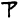とあるはマテラスミコトにて、をアとすれば天照らす尊となる。依てをアと決定する。
十二。第一行に二ヶ所、其他にも現るる組合はヲホとして大の意味に取れば意味通ずる。大は元來オホなれど天津教ではヲホで差支へないのである。故にをホと同知する。
十三。第二十四行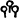はシタマフと爲すべき所なれどマは既にと同知せられてゐる故、天津教流に假名遣ひに頓着せずして、シタモフにて通ずるとなし、をモと同知して置く。
十四。第二十七行のは野の象形でノ字なること明かである。是は隨所に現れてゐるが此推測の妥當なることが直に證明される。即ちはノと同知する。
十五。第十五行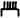は前後の關係より加賀の白山と云ふと解すべきである。即ちはカ、はイに當つべきも、イには既にが同知せられてあるから、はユであらうと思はれる。蓋し此字は湯の象形である。此推斷の妥當なることは第七行の、第九行の、第十一行のに於けるの用例に照して明かである。
十六。第五行及び第二十一行に現れるは明かに象形字であるが、これは龜の如き動物の背を形どりたるものと解しセとする。それにて意味が通ずる。
十七。第五行第六行第七行第十三行等に現れる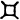は前後に鑑みてヨとすれば意味が通ずる。即ちをヨと同知する。
十八。第八行
十九。第二行第十六行第二十五行にの言葉があるが第二十五行に於ける下の言葉との關係から即位に當るものと推定出來る。即ちはソと同知する。
二十。以上四十四字の中三十九字を同知し得たから、殘るものは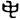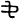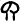の六字となつた。而してイロハの側から見て同知されないものはヘヌルレウヰオケエヱの十字である。此等の十字を代る／＼神代文字に當嵌め意味が通ずるや否やを見れば自ら同知が出來ることになるのである。同知の結果を云へばはウ、はエ、はオ、はヘ、はル、はレである。これで文書中の文字は悉皆解つたのであるが、同時に又ケヌヰヱの四文字が文書内に現れてゐないことも判つたのである。
ア行
カ行
サ行
タ行
ナ行
ハ行
マ行
ヤ行
ラ行
ワ行
ン
右二十段の檢索による結果を五十音の表にすれば上の如くである。一見象形文字と想はれるものを摘出すれば蚊、木、柵、背、田、乳、土、手、戸、魚、荷、根、野、葉、火、屁、穗、眉、身、
第一、文體に就いて吟味するに、先づ以て部分的檢査より始める。
（イ）文字の右下方に位する小黒點は句讀點であるが、要らないと思ふところにあつたり、一個で十分であるのに二個打つたりしてある。第四行第七行第十一行第十三行第十五行第十六行第十七行等に其例がある。
（ロ）假名遣ひの誤は甚だ夥しい。オヲの混用は多くあるが意味を取違へる恐れもないから一々指摘しない。スをシとする頑強性は無論此所にも繼續する。第一行第十六字はの誤、第四行第十二字も亦の誤、第六行第十字及び第七行第三字はの誤（此は古言と取れば差支へない）、第二十四行第十三字はの誤、第二十八行第三字はの誤、第三十一行第十九字はの誤とすべきである。
（ハ）全然關係を認めること出來ない字を使つたものに第二十四行第六字がある。是はとすべきであるが、此文章ならでも我慢出來る。併しでは全く意味を爲さない。
（ニ）脱字を掲ぐれば、第二行のの下に月の名が落ちてゐるが、何月を入れてよいか判らない。第三行第十二字と第十三字との間にの三字を補入せざればイサナキミフタカミで意味を爲さない。第七行第七字より始まるは脱字がありさうに思はれる。の間にを入れると、是ヲバ一ニの意となり解かることになる。第十四行第十七字の上にを補ふべきであると思ふ。それとも天津教用例で之を省略するを慣例としてゐるのかも知れない。第十六行第二字と第三字との間及び第二十六行第六字と第七字との間には第十行に於ける用例に從へばを入れるのであるが、是は孰れを是とすべきか判らないが、注意を要するため此所に記して置く。第二十三行第十五字の下にが脱してゐる。第二十五行第十字の下にを拔かしてゐる。
（ホ）動詞の終止形を取るべき所に連用形を用ゐることは第四文書に於て見出されたのであるが、此第五文書の中にも現はれてゐる。本文中にもあるが、最も著しきは署名に伴つて現はれてゐる。このことは第四文書に於けると同じである。第二十五行以下第三十一行に至るが即ちそれである。
（ヘ）神代の言葉を以て記してある筈なるに、漢音の言葉が雜つてゐる。第二行（即位八十八億萬年）、第三行（サイシ）、及び（サイカンシヤウ）、第四行（天）、第六行（スイモン）、第八行、
ニ．スミヲヤスミラヲホカミタマシヘタカラヲ．ヲホミヤヲツクリテ．ソクイハチシフハチヲクマンネン． （不 明）マドムツヒ．サイシイサナキイサナミフタカミ．サイカンシヤウ．
マツリス．イツイロヒトハヘレス．．テンヲ．ミコトシ．ヲンヘタチ．イタノクニノ．イタルネクニムリセヨトアリ．イロヒト．イト
マシテ．オノレノクニイ．コシネノドノ．ニシウラスイモン．ヨリカライカヘル．コヲイチニアメヨリアマクタリトユフ．．イサナキスミラミコトテンヲ．ムムヲクマンネンサナヘツキタツイチヒ．ミコトバヲアメマツリスミラミコトヲユヅ
リコト．アネノアマサカリヒニモカツヒミアマテラスミコトニ．ユツリワタシ．．イサナキカミムムヲクイツムムマンネン．フクミツキ．マドヨツヒ．コシネナカ．ニエヤ．
トトノヲヤマ．ヨリ．カミサリ．イサナミカミ．．ムムヲクマンネ ン．カナメツキツコモリムツヒニ．
カミサリ．トコロ、カカノシラヤマトユフ．．アマサカリヒニモカツヒミスミラミコトテンヲ．ソクイハチムムマンネン．ムツヒツキ．タツイチヒ．ニ．ムトフミクライシノシヲヲツカミヲホネノカミヨリ
ロクシフニ
イサナキイサナミフタカミ．マデオ．フミシテ．
アワセマツリ．サイカンシヤウシ．マツリ．サイシ．
テンヲ．フクサイシ．シサノヲミコト．サイクワンチヤウ
ヲモイカネ．コヤネ．フトタマ．ヤホヨロヅカミ．
ミコト．ツトノテマツリシタモウ．
ソクイハチムムマンネンムツヒツキタツイチヒニフミシ
テンヲフ
アマサカリヒニモカツヒミスミラミコト シ
サイシミ
フ
ツキモカツスサノヲミコト シ
ミ
フ
ヲモイカネミコト シ
ミ
クニヲ フ
マ ヒトヲ リ カミ コヤネミコト シ
ミイヲ ミ
フ
フトタマミコト シ
ミ
スミヲヤスミラヲホカミタマヤノタマシヘニシ
ロクシフサン
此文の終に天照太神即位八百萬年正月元日の日附にて御署名があり、之につゞき素盞烏尊、天思兼命、天兒屋命、天太玉命の副署がある。即ち此文書は神樣の御書であり、假令模寫であつたとしても國寶の資格は十二分である。然しながら文章の口調から觀てどうして之が神代のものと考へられよう。幼童の數へ歌にさへ古い呼方を傳へてゐる數字を此文書では殆ど皆漢音で讀んでゐる。剩へ年、即位、勸請、水門等の語も漢音にて出現する。而して昔を偲ばせる目出度い語句は更に見當らず、年月日の鵺的讀方などは以て證とするに足らないのみか却て打毀しである。故に此文章は一見して近頃のもので、しかも拙劣の書振りであることが頷かれる。勿論天津教では是は神代の原稿であると主張し、其主張の前提として漢音など皆日本より創つたと言ふであらう。何事でも日本より創つたといふ負惜みの考方は獨り天津教に限らず、昔からよく耳にするところで、世間普通のこととして聞流して置いても差支へもないが、先に部分的に指摘して置いた此文の缺點は見逃し難い。假名違、脱字、誤字等正に亂脈と稱すべきに、更に御母親伊弉那美尊の御名の大半を書落したる如き麁相の責任を一體誰に歸せしめようとするのであるか。こゝに想到したら天津教は宜しく反省悔悟して深く謹愼すべきである。抑もかゝる亂脈は書手の頭の惡いのか若くは取急いだための過失に由るものと取るが最も穩當の解釋であることは反對する人もあるまいが、之に加へて天津教に於て事實をこゝに至らしめたる特殊の事情も進んで推定出來ると思ふ。即ち天津教では平群眞鳥の記録を神代文字の記録の飜譯であると稱するのであるが、事實は正反對で神代文字の記録は平群眞鳥の記録の飜譯であるのである。かゝる特殊の事情の存在の下に飜譯を取急いだため、古語の穿鑿も行屆かず、いやが上に誤謬を犯すに至つたものと解すべきである。マツリス．イツイロヒトハヘレス．．テンヲ．ミコトシ．ヲンヘタチ．イタノクニノ．イタルネクニムリセヨトアリ．イロヒト．イト
マシテ．オノレノクニイ．コシネノドノ．ニシウラスイモン．ヨリカライカヘル．コヲイチニアメヨリアマクタリトユフ．．イサナキスミラミコトテンヲ．ムムヲクマンネンサナヘツキタツイチヒ．ミコトバヲアメマツリスミラミコトヲユヅ
リコト．アネノアマサカリヒニモカツヒミアマテラスミコトニ．ユツリワタシ．．イサナキカミムムヲクイツムムマンネン．フクミツキ．マドヨツヒ．コシネナカ．ニエヤ．
トトノヲヤマ．ヨリ．カミサリ．イサナミカミ．．ムムヲクマンネ ン．カナメツキツコモリムツヒニ．
カミサリ．トコロ、カカノシラヤマトユフ．．アマサカリヒニモカツヒミスミラミコトテンヲ．ソクイハチムムマンネン．ムツヒツキ．タツイチヒ．ニ．ムトフミクライシノシヲヲツカミヲホネノカミヨリ
ロクシフニ
イサナキイサナミフタカミ．マデオ．フミシテ．
アワセマツリ．サイカンシヤウシ．マツリ．サイシ．
テンヲ．フクサイシ．シサノヲミコト．サイクワンチヤウ
ヲモイカネ．コヤネ．フトタマ．ヤホヨロヅカミ．
ミコト．ツトノテマツリシタモウ．
ソクイハチムムマンネンムツヒツキタツイチヒニフミシ
テンヲフ
アマサカリヒニモカツヒミスミラミコト シ
サイシミ
フ
ツキモカツスサノヲミコト シ
ミ
フ
ヲモイカネミコト シ
ミ
クニヲ フ
マ ヒトヲ リ カミ コヤネミコト シ
ミイヲ ミ
フ
フトタマミコト シ
ミ
スミヲヤスミラヲホカミタマヤノタマシヘニシ
ロクシフサン
以上文體の考察を約言すれば、此文書は神代文字で記してゐるが、他の文書と同じく近頃のもので、其作製は第五文書より後るるものと推斷される。
第二、書體に就いて吟味するに、文字は象形と取るべきもので書とも畫とも着かぬながらに又兩性的の性質を認めなければならぬ。即ち書畫一致の見方を應用して、氣韻如何を探して見るに、何所か生硬なるものがあつて餘り善い感じを與へない。技巧の上から見ても單なる熟練はあつても苦心に因る精練を認めることが出來ない。併しながら此點先入の連想が働き過ぎる恐れがあるから多くを語らない。筆者の同知に關しては尚更ら臆して判斷を差控へる。
私は所謂神代文字の豫備知識が無かつたため、此等文書の調査を始めた時には天津教の神代文字は讀めようとは想はなかつたが、丁附の數字に不圖氣附いてから奮發して凡そ一ヶ月を費して全部が讀めた。後に友人の渡邊大濤氏から近頃某氏の著した神代文字の本の中に此文字を説いてゐることを聞かされ、自分の寡聞を恥づると同時に、世間には又迷信者もあるものと思つた。此時ふと
以上書體の考察を約言すれば、神代の文字と見ても餘り上手な書神の手とは取れず。結局此文字は後世の文字で、瞞著を化粧する第二の瞞著に過ぎないものであるとの判斷に歸着する。
第三、内容に就いて吟味するに。形式的に見て記事の精麁宜しきを得ず、此點先づ疑ふべきものがある。神代のことは正史にも記載されてゐるが、空々漠々捕捉し難いのである。故に水戸で大日本史を編纂するに當り義公の英斷で神代を削去つたことが傳へられてゐる。併しこの空漠の背景を利用して更に景を盛り輪をかけた臺帳を作り大芝居を打つことが跡を絶たない。孰れも殊勝に見せかけて居るが必ず眉唾ものである。此文書を實質的に見て天津教も亦此種類の惡巧であることを斷定するに餘りがある。此文書第十一行より第十五行へ讀續けると「コシネナカニエヤトトノヲヤマ」と云ふがある。是は越中國新川郡の立山を指すものと想はれるが、ニエヤは婦負とも取れる。さうだとすると立山の所屬が違ふことになる。又是より重大なることは此所の記事に伊弉那美尊は伊弉那岐尊より後に御隱れになつたことにしてあるが、是は正史と反對である。かうした正史を無視することは前にも例があるので珍しくもないから、一つ變つた矛盾を演繹してみよう。第七行より第十二行に至る敍述に伊弉那岐尊は百億萬年にして御位を天照太神に讓るとあり、第二十五行に天照太神即位八百萬年の日附がある。即ち此文書作製の時、日本は既に百億八百萬年の舊國である。そこで此間に神口の増加幾何なりしやと問ふのである。神代に於ける生殖に關するあらゆる條件を今日に比し如何に不利益に見ても百億八百萬年の間には夥しき神々を生産し、時々神退治が行はれない限り、右日附の當時には地球上陸となく海となく一平方メートル毎に何百萬といふ神を宿さなければならなかつたらうと思はれる。勿論これは胸算用で稍
精密の計算も出來ないではないが、必要もないから旁極く内場に見積つての話であるが、此問題を天津教では何と片附けるであらう。定めし神は天にいませば地上の廣狹など問ふところでないと説明するかも知れない。然らば第一行より第七行に至る記述に伊弉那岐伊弉那美二尊の時代に造られた大宮のことがあるが、この建築物は何處に在つたか。記事の前の部分を缺いてゐるから判然しがたい所もあるが、續く所によれば「五色人ハイレス（中略）越根能登ノ西浦水門ヨリ唐イカヘル」とあり、推察するに越中國神明村に在つたとしたのでないかと想はれる。して見るとこの大宮は日本の土地に在り、伊尊二柱を始め奉り八百萬神も代々日本の土地に御住居あらせられたと拜察する外はない。我々もそれで宜しいと思ふ。而して又越根中大宮の規模大ならずして、五色人を收容し兼ねたことは甚だ遺憾であつたと思ふ。何故に百億萬年に相應して、せめて八百萬里四方の摩天樓でも準備して置かなかつたかと言ひたくなる。是を以て之を見るに此文書に於て説くところ全く數の觀念を缺き、常識的の思想を離れ、而して正史に反する記述を敢てして憚らない。實に總ゆる點より見て人困らせの虚妄を言振らしてゐるに過ぎないのである。以上内容の考察を約言すれば、此文書は荒唐無稽全く信を置くに足らない。
上述の理由に由り、大日本天皇太古代上々代神代文字之卷は近年の僞作にして、しかも此種類の神代文字の文書は所謂形假名唐文字の第五文書の種類の後に成れるものと判斷する。
以上數節に於いて試みた批判を要約すれば、天津教が天下の至寶として誇示する天照太神、後醍醐天皇、長慶天皇の御眞筆及び平群眞鳥、竹内宗義等の眞筆と稱するものは、第一に文章は揃ひも揃つて下手であり、肝心な語法語調も億萬年を通して不變なるのみならず、誤謬は頑強に保持せられて共通永存してゐる。第二に筆蹟は孰れも見事ならず、著しく近代風を帶びたる上に類似の點多く、一々別人の手に成るものと取れない。第三に所説は正史と矛盾するばかりか、明治以後漸く知れ亙つた如きことを平然として述べてゐる。依て追次此等の文書に就き、其文體、其書體及び其内容の檢討を遂げ、悉く最近の僞造であることを暴露せしめたのである。此上疑問として殘る變態性は之を稱明し得たところで、僞造の事實を動かすことは出來ない。故に天津教は五つの致命傷を蒙り完全に生息の道を絶たれたに等しいのである。もし更に文書の原物及び古器物を見ることを爲さば彌
益不都合を露現し、もし更にその依據と爲す上記乃至西洋の傳説との比較調査を行はば剽竊炙直しの狡計を剔抉するを得べきも、要らない努力を拂つて死屍に鞭つ愚を演ずべきでない。顧ふに天津教の言説は虚妄であるが、今迄その宣傳に當つて、類似の宗教的運動に見る如き副作用を伴はざるため、害毒は比較的輕微であると思はれる。此點偶然の結果と云へ、恕すべきものがある。かるが故に又かの如何はしき説教を以てする上に更に如何はしき副作用を以て人を釣り、陶醉迷溺せしめ、其虚に乘じて、成效を獲得した族に比すれば、天津教の境遇は貧弱で、氣の毒にも思ふ。此點當然の結果とは云へ、同情に値するものがある。此際私は漫りに天津教を惡口するものではない。我側らに迷へるものと迷はんとするものとを見て、其覺醒を促すための言を述べるに過ぎないのである。望むらくは天津教も亦反省悔悟して其妄を棄て、速に皇道の正しきに復歸せんことを。